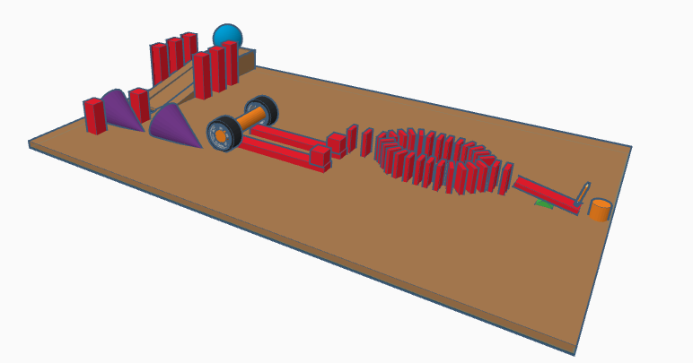
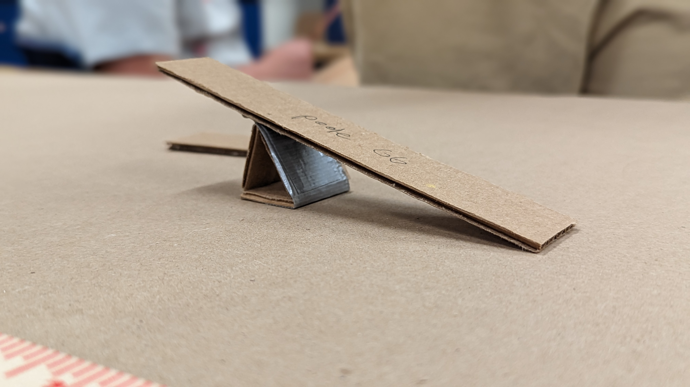

9/1/23 - This is my second journal entry
This week we learned about the saftey and discipline of engineering. We always need to tie long hair back, don't wear loose clothing, wear closed-toes shoes
always check your surroundings, no eating, never work alone, and always clean after yourself. Don't mess around and stab people.
In the image below we had our second challenge day. I was a judge so I did not work on a project but I helped other people make theirs.
9/8/23 - This is my third journal entry
This week was alot of fun. We stated working on our rube goldberg projects and ours is coming along well. I am building the rube goldberg machiene with my friends Noah and Evan.
We have four different simple machienes including a lever, wheel and axel, wedge, and ramp.

Above is what our rube goldberg machiene will look like. The goal of the machiene is to use a baseball and through using chain reactions, will pop a balloon.
The most challenging part of this will probably be balaning the cones to perfectly hit the wheel.
9/22/23 - This is my fourth journal entry
Last week was alot of fun, we finished our rube goldberg machienes and tested them this week. We had a wheel, a ramp, a lever, and wedges in our project.
My project coulde have been better if we used cups out of cardbourd and added a bigger ramp. Our project worked sucsefully but could have been much better.
This video is of our project!


This project was alot of fun to work on and very interesting. The following week we learned more about computer enegineering.
We leaned about computers, quantum compters, and other stuff too.
We also did multiple challenges like manufacturing an E with mesurments.

We wrote down the blue prints and had to make someone elses E and not everyones turned out as they thought it would.
9/28/23 - This is my fifth journal entry
This week we disected computers and laptops. I really like computers and learning more about them. I thought i knew aabout a computer before but now i know even more.
I have a computer at home and i built it myself. I ddint know alot about my coputer when i was building it but now i know all about it. The cpu(centeral proccesing unit) controls the computer.
This weekend i'm going over to my friends house to eat chiken. Noah is going too(to eat chiken)
This week was alot of fun and i had fun.